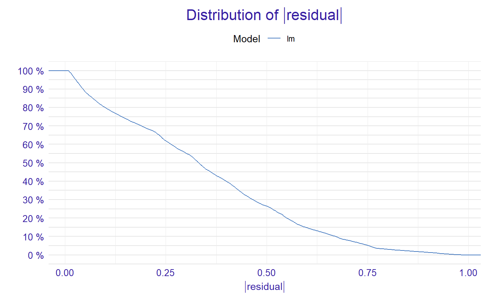
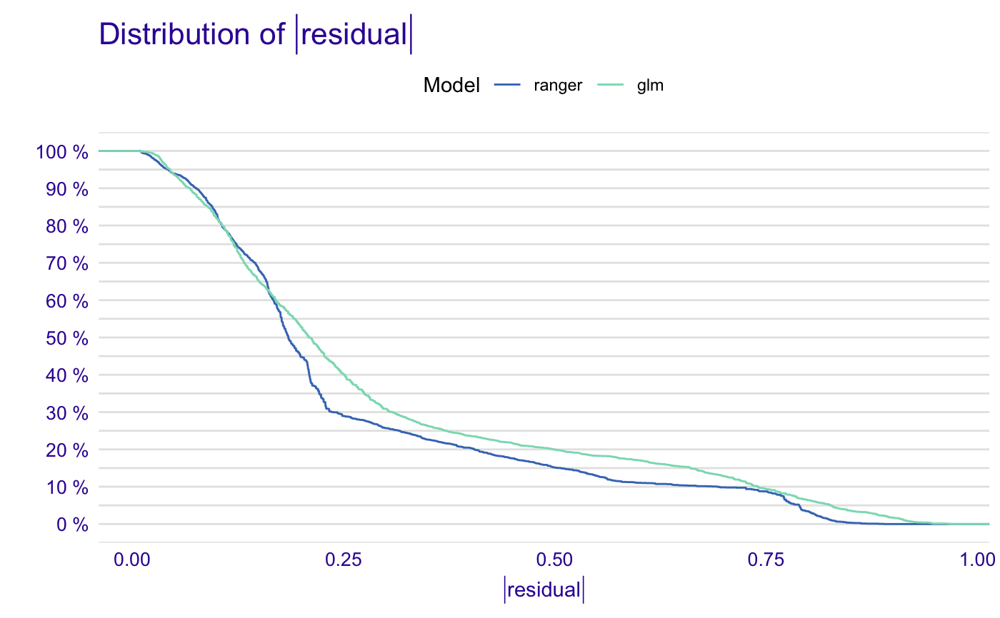
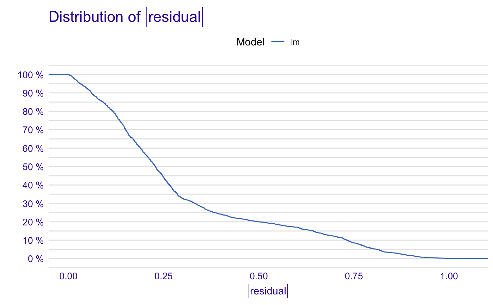
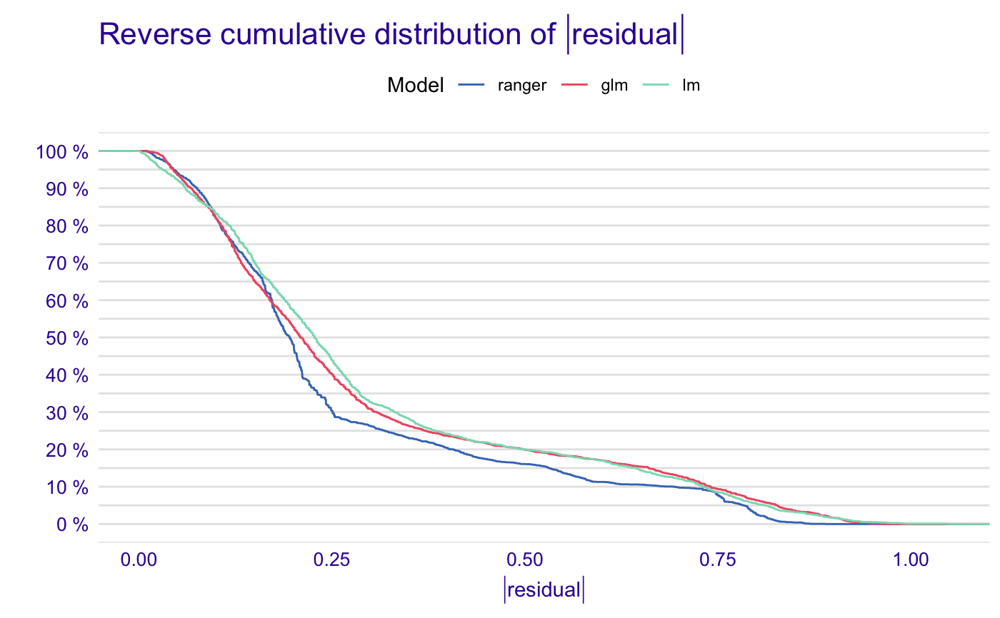

Function model_performance() calculates various performance measures for classification and regression models.
For classification models following measures are calculated: F1, accuracy, recall, precision and AUC.
For regression models following measures are calculated: mean squared error, R squared, median absolute deviation.
model_performance(explainer, ..., cutoff = 0.5)
| explainer | a model to be explained, preprocessed by the |
|---|---|
| ... | other parameters |
| cutoff | a cutoff for classification models, needed for measures like recall, precision, ACC, F1. By default 0.5. |
An object of the class model_performance_explainer.
Explanatory Model Analysis. Explore, Explain and Examine Predictive Models. https://pbiecek.github.io/ema/
# \dontrun{ library("ranger") titanic_ranger_model <- ranger(survived~., data = titanic_imputed, num.trees = 100, probability = TRUE) # It's a good practice to pass data without target variable explainer_ranger <- explain(titanic_ranger_model, data = titanic_imputed[,-8], y = titanic_imputed$survived)#> Preparation of a new explainer is initiated #> -> model label : ranger ( default ) #> -> data : 2207 rows 7 cols #> -> target variable : 2207 values #> -> model_info : package ranger , ver. 0.11.2 , task classification ( default ) #> -> predict function : yhat.ranger will be used ( default ) #> -> predicted values : numerical, min = 0.008261383 , mean = 0.323644 , max = 0.9881962 #> -> residual function : difference between y and yhat ( default ) #> -> residuals : numerical, min = -0.8207537 , mean = -0.001487207 , max = 0.8881077 #> A new explainer has been created!# resulting dataframe has predicted values and residuals mp_ex_rn <- model_performance(explainer_ranger) titanic_glm_model <- glm(survived~., data = titanic_imputed, family = "binomial") explainer_glm <- explain(titanic_glm_model, data = titanic_imputed[,-8], y = titanic_imputed$survived, predict_function = function(m,x) predict.glm(m,x,type = "response"), label = "glm")#> Preparation of a new explainer is initiated #> -> model label : glm #> -> data : 2207 rows 7 cols #> -> target variable : 2207 values #> -> model_info : package stats , ver. 3.6.1 , task regression ( default ) #> -> predict function : function(m, x) predict.glm(m, x, type = "response") #> -> predicted values : numerical, min = 0.008128381 , mean = 0.3221568 , max = 0.9731431 #> -> residual function : difference between y and yhat ( default ) #> -> residuals : numerical, min = -0.9628583 , mean = -2.569729e-10 , max = 0.9663346 #> A new explainer has been created!mp_ex_glm <- model_performance(explainer_glm) mp_ex_glm#> Measures for: regression #> mse : 0.1475282 #> rmse : 0.384094 #> r2 : 0.3244172 #> mad : 0.2085776 #> #> Residuals: #> 0% 10% 20% 30% 40% 50% #> -0.96285832 -0.32240247 -0.23986439 -0.19544185 -0.14842925 -0.11460334 #> 60% 70% 80% 90% 100% #> -0.06940964 0.06185475 0.29607060 0.72120412 0.96633458plot(mp_ex_glm)titanic_lm_model <- lm(survived~., data = titanic_imputed) explainer_lm <- explain(titanic_lm_model, data = titanic_imputed[,-8], y = titanic_imputed$survived)#> Preparation of a new explainer is initiated #> -> model label : lm ( default ) #> -> data : 2207 rows 7 cols #> -> target variable : 2207 values #> -> model_info : package stats , ver. 3.6.1 , task regression ( default ) #> -> predict function : yhat.lm will be used ( default ) #> -> predicted values : numerical, min = -0.234433 , mean = 0.3221568 , max = 1.091438 #> -> residual function : difference between y and yhat ( default ) #> -> residuals : numerical, min = -1.045905 , mean = 1.291322e-14 , max = 1.049392 #> A new explainer has been created!# }